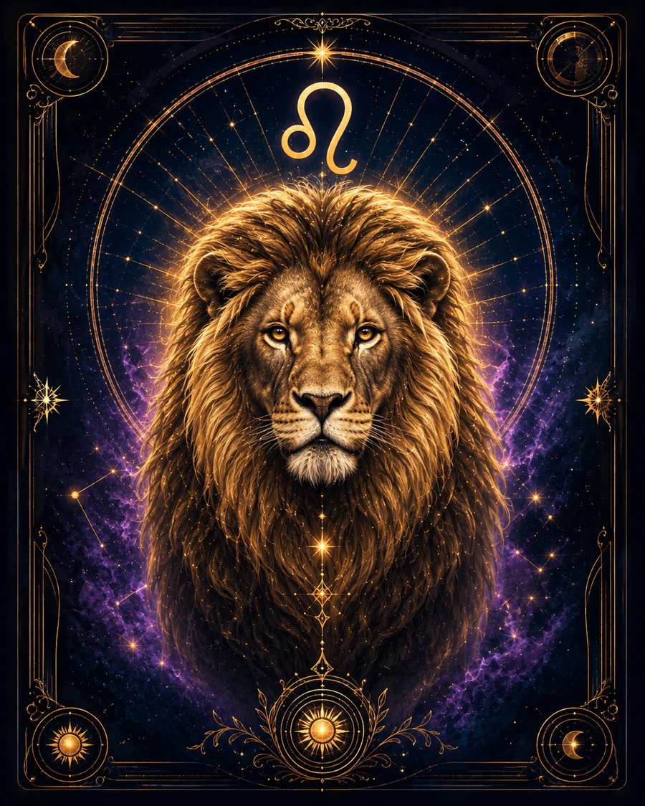

В двух словах
«Я хочу проявить себя».
Какой это человек
Льву важно вложить в дело себя и почувствовать, что его присутствие имеет значение. Он стремится к яркому самовыражению, творчеству, лидерству и признанию. Это не всегда сцена буквально, но почти всегда потребность видеть результат собственного влияния.
Что ему движет
Самореализация и уважение. Ему важно гордиться собой.
Сильные стороны
Творчество, уверенность, щедрость, лидерство, великодушие, способность вдохновлять и поддерживать других.
Слабые стороны
Гордыня, болезненная реакция на пренебрежение, потребность в похвале, драматизация ситуации.
В отношениях
Любит ярко и щедро, хочет гордиться партнёром и чувствовать уважение к себе.
В работе и деньгах
Хорошо проявляется там, где можно создавать, руководить, выступать, организовывать или нести личную ответственность.
Когда всё плохо
Начинает бороться за внимание, а критику воспринимает как удар по достоинству.
Главное внутреннее противоречие
Хочет быть самодостаточным, но часто зависит от реакции окружающих сильнее, чем готов признать.
Это обобщённое описание солнечного знака, а не полный портрет человека. В реальной натальной карте характер зависит не только от Солнца, но и от других факторов.